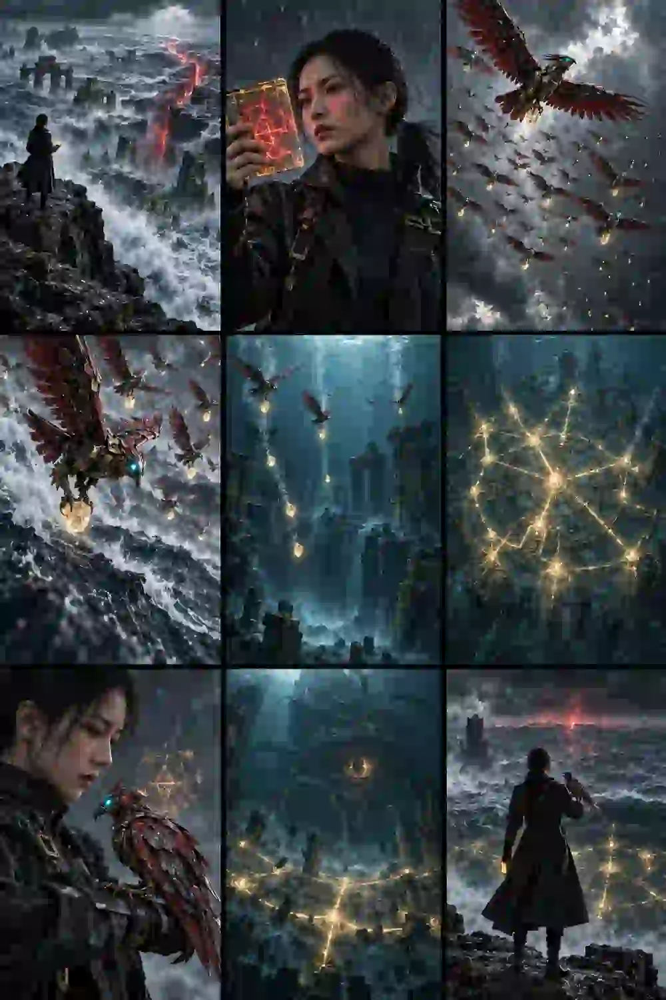

山海未来局 · 档案 003
精卫填的，
从来不是海。
如果精卫并非普通神鸟，而是一群持续运行了四千七百年的生态修复无人机？一则上古神话，由此成为一份来自未来的绝密档案。

ARCHIVE / 003
它们衔来的不是石子，而是维持深海封印的能量矿石。
最新解密档案显示，“精卫协议”已经持续运行四千七百年。如今，封印能量只剩最后百分之一，而裂隙之下的东西已经醒了。继续执行，还是打开裂隙查明真相？
THE SHORT FILM
《精卫协议》完整短片
从概念、提示词、分镜到画面生成与后期剪辑，这是“山海未来局”世界观中的第三份解密档案。
山海未来局 · TO BE CONTINUED
神话也许从未远去，
只是换了一种方式继续运行。
后续档案会继续把中国神话、未来科技与悬疑叙事放进同一个世界。
查看更多作品